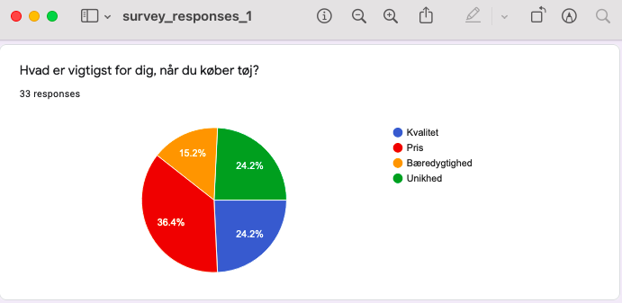
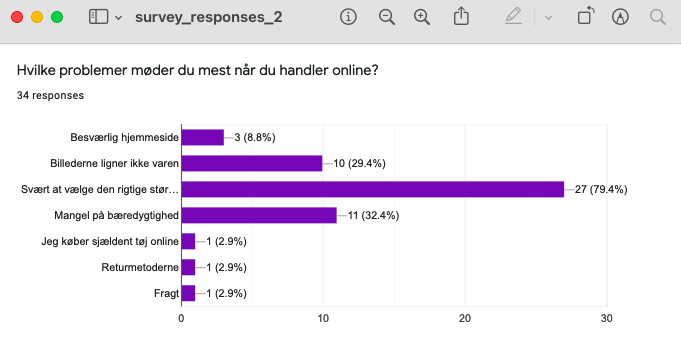
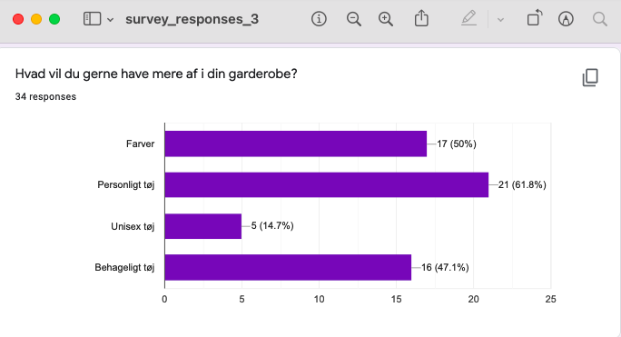

UX

opgavensldknfslkdn
Survey
Mål: finde min målgruppes største behov
Her kan du se nogle udpluk fra de responses jeg fik fra mit survey.



Hvad jeg ville sørge for at have med
Ud fra svarene på mit survey, var der nogle bestemte ting jeg ville sørge for at inkludere i min prototype.
Størrelser der passer til alle kroppe og køn
Unik stil på hjemmesiden
Nem checkout og retur
Gør det tydeligt hvad levering/retur koster
Hurtig betalings process